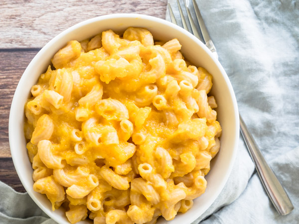

Mac n' Cheese

Description
This is a Mac and Cheese recipe that is everything you want in a knock-your-socks off Macaroni Cheese – cheesy and creamy, with perfectly cooked macaroni and plenty of sauce.
I'm kidding, this is the recipe off the box. Mostly because I am a terrible cook and would need to repetedly quiz my wife to get everything right.
Ingredients
- 1 box Kraft Macaroni & Cheese
- 6 cups boiling water
- 4 Tbsp butter
- 1/4 cup 2% milk
Steps
- Add 6 cups of water to a pot and bring to a boil.
- Stir macaroni into boiling water. Let boil for 7 to 8 minutes or until macaroni is tender.
- Once your macaroni is tender, drain it and set it aside.
- Add your 4 Tbsp of butter to a hot pan then add your 1/4 cup of 2% milk.
- Once your butter has melted stir in the included cheese packet from the box.
- Stir the sauce into your drained macaroni.
- All Done! Now for the guilt.....